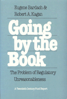

<body bgcolor="#FFFFFF" text="#000000" link="#0000FF" vlink="#CC0000" alink="#CC0000"><center><hr width="350" size="1" align="center" noshade>Argues that government regulation of industry is needed, but unreasonable application creates serious problems<hr width="350" size="1" align="center" noshade><p><a href="https://cdcshoppingcart.uchicago.edu/Cart/ChicagoBook.aspx?ISBN=9780877222514&&PRESS=temple" target="_top">Buy this book!</a> | <a href="https://cdcshoppingcart.uchicago.edu/Cart/Cart.aspx?PRESS=temple" target="_top">View Cart</a> | <a href="https://cdcshoppingcart.uchicago.edu/Cart/Cart.aspx?PRESS=temple" target="_top">Check Out</a></p><p></p></center><!--none//--><h1>Going by the Book</h1>
<H2>The Problem of Regulatory Unreasonableness</H2>
<h3>Eugene Bardach and Robert A. Kagan</h3>
<P>cloth 0-87722-251-7 $29.95, Dec 81, <FONT COLOR=#990033>Out of Print</FONT>
<br>paper 0-87722-252-5 $14.95, Jan 82, <FONT COLOR=#990033>Out of Print</FONT>
<BR> 350 pp
</P><BLOCKQUOTE><I>"The most comprehensive book about how regulation is actually carried on and the most enlightening about its policy dilemmas."</I>
<br>&#151<b>Aaron Wildavsky</b><I></I></BLOCKQUOTE>
<p>Challenging the assumptions of both the opponents and supporters of protective government regulation of industry and of a wide range of social services, this book argues that regulation is needed but that today's unreasonable application makes for serious and widespread problems. As Bardach and Kagan see it, inflexible, legalistic enforcement discourages responsible behavior, threatens the legitimacy of the regulatory agency, and generates resistance that undermines regulatory objectives. At the same time, they point out the direct regulation is much more effective than such substitutes as mandatory disclosure and liability law.
<p>Bardach and Kagan, who interviewed extensively executives of small and large businesses, agency officials and field inspectors, identify and analyze numerous successful applications of both direct and indirect regulation. They find that successful regulators are those who understand the wide variation in the capacity and willingness of business to comply with regulations, and who have some discretion in applying them.
<p>Overregulation, the authors point out, comes not from the activism of inspectors but from their conservatism, the natural desire of bureaucrats to avoid trouble by conforming to agency regulations. Regulatory agencies, in turn, experience a "ratchet effect": locked into the existing body of regulations, they find it is much easier to add regulations than to subtract them.
<p>At a time when the Reagan administration is questioning the degree of government regulation of the private sector, this rich blend of empirical and analytical material should be read and debated by policymakers, economists, businessmen, and lawyers. It raises questions of theory and practice for students of political science, public administration, organizational behavior, criminal justice, and social welfare.
<BR>&nbsp;<h2>Reviews</h2>
<p><I>"A very stimulating book....A sophisticated example of the continuing utility of qualitative political science."</I>
<br>&#151<b><I>American Bar Foundation Research Journal</I></b>
<BR>&nbsp;<H2>About the Author(s)</H2>
<P><b>Eugene Bardach</b> is Professor of Public Policy at the University of California, Berkeley. He is the author of <I>The Implementation Game</I> and <I>The Skill Factor in Politics</I>.</P>
<P><b>Robert A. Kagan</b> is Associate Professor of Political Science at The University of California, Berkeley. The author of <I>Regulatory Justice</I>, he has served on the Economic Stabilization Program's Price Commission, managed a small business and practices law.</P>
<BR><H2>Subject Categories</H2>
<p><A HREF="/tempress/political.html" TARGET="_top">Political Science and Public Policy</a>
<BR><A HREF="/tempress/labor.html" TARGET="_top">Labor Studies and Work</a>
</p>
<p align="center"><a href="https://cdcshoppingcart.uchicago.edu/Cart/ChicagoBook.aspx?ISBN=9780877222514&&PRESS=temple" target="_top">Buy this book!</a> | <a href="https://cdcshoppingcart.uchicago.edu/Cart/Cart.aspx?PRESS=temple" target="_top">View Cart</a> | <a href="https://cdcshoppingcart.uchicago.edu/Cart/Cart.aspx?PRESS=temple" target="_top">Check Out</a></p><p><font face="Arial" size="1"><a href="copyright.html" onMouseOver="window.status='Web Copyright Policy';return true;" onMouseOut="window.status=''" title="Web Copyright Policy">&copy;</a> 2015 <a href="http://www.temple.edu" target="new" onMouseOver="window.status='Link to Temple University home page';return true;" onMouseOut="window.status=''" title="Link to Temple University home page">Temple University</a>. All Rights Reserved. http://www.temple.edu/tempress/titles/266_reg.html</font></p>